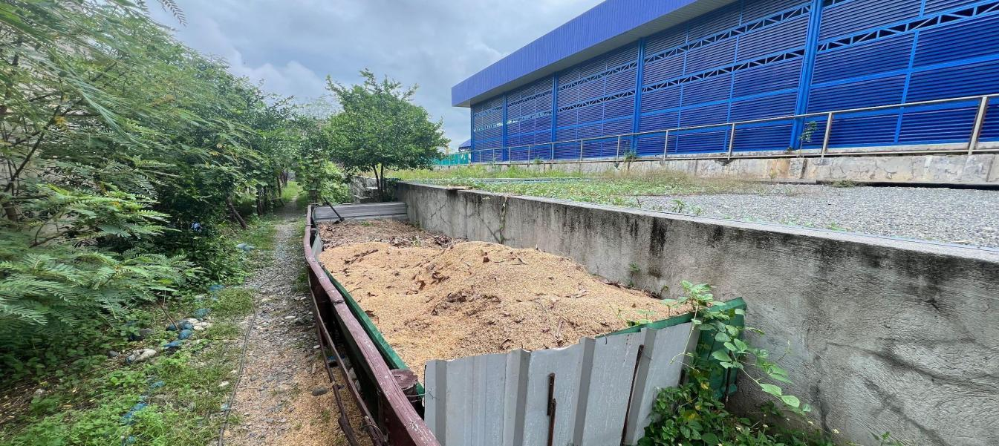
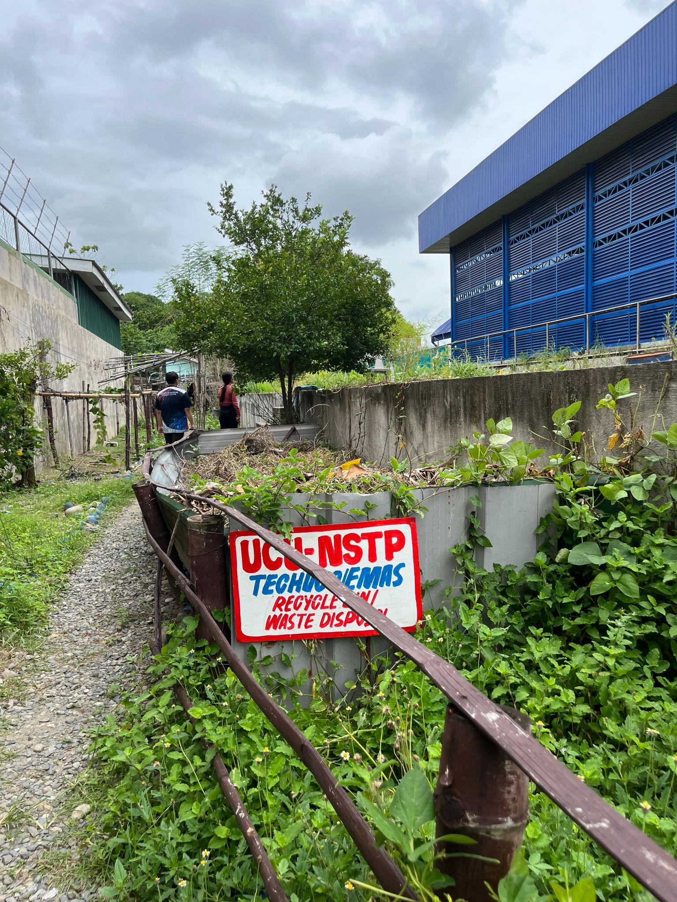

At the forefront of Urdaneta City University’s sustainability initiatives is the Marawi/STP (Sewage Treatment Plant), an advanced facility that transforms organic waste into valuable resources in alignment with the UI GreenMetric World University Rankings. This initiative directly contributes to the Waste (WS), Setting & Infrastructure (SI), and Water (WR) indicators, reflecting the University’s integrated and systems-based approach to environmental management.
Through efficient treatment and resource recovery processes, the Marawi/STP converts leaf litter and other biodegradable materials into nutrient-rich compost. This significantly reduces the volume of waste sent to landfills while simultaneously enhancing soil fertility for campus landscaping, gardening, and greening initiatives. By reintegrating organic outputs into campus use, the system supports a closed-loop, circular economy model that maximizes resource efficiency and minimizes environmental impact.
Beyond its functional role, the Marawi/STP exemplifies a holistic sustainability framework. It promotes a continuous cycle of renewal in which organic waste is not discarded but repurposed to sustain ecological balance. This process contributes to improved soil health, supports biodiversity within campus green spaces, and strengthens the resilience of the university’s ecosystem.
| Sewage Treatment Plant & Composting Facility Overview |
|---|
|
 Organic waste treatment facility layout and operational setup
|
The facility also delivers measurable environmental outcomes, including:
| Organic Composting Production and Campus Greening Application |
|---|
|
 Active compost piles processing organic grounds maintenance waste for campus landscaping
|